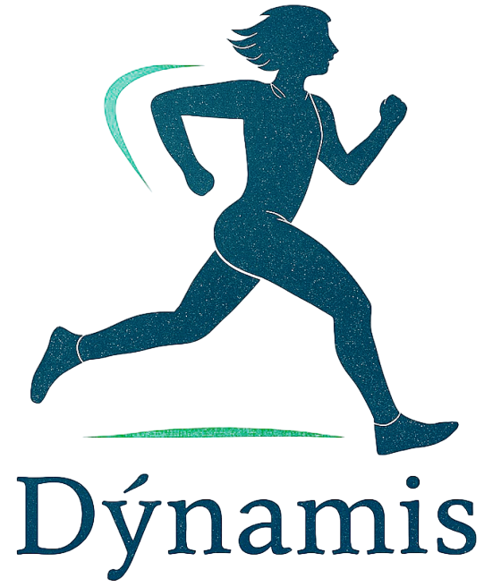
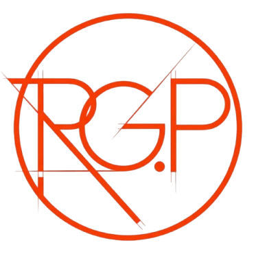

Dynamis
Proyecto desarrollado en Kotlin enfocado en la gestión (CRUD) para un gimnasio.

Soy un desarrollador Full Stack Junior con sólidos fundamentos en tecnologías frontend (HTML, CSS, JavaScript) y lenguajes backend de fuerte adopción empresarial (Java, C#). Mi enfoque se centra en la creación de aplicaciones eficientes, priorizando el código limpio y la gestión estructurada de bases de datos relacionales como MySQL y SQL Server. Me apasiona resolver problemas reales mediante arquitecturas escalables y mantenibles. Actualmente, estoy enfocado en dominar frameworks modernos como React y Spring Boot, además de familiarizarme con herramientas clave para el ciclo de vida del software y despliegue, como Docker y entornos cloud (AWS). Mi objetivo principal es integrarme a un equipo de desarrollo profesional, aportar valor y proactividad desde el primer día, y consolidar mi carrera construyendo productos de software que generen un impacto real en el negocio.

Proyecto desarrollado en Kotlin enfocado en la gestión (CRUD) para un gimnasio.
Landing page para empresa distribuidora de gas envasado.
Utilizando HTML, CSS y JavaScript para crear una experiencia de usuario atractiva y funcional.

Gracias a un descubrimiento, un grupo de científicos y exploradores, encabezados por Cooper, se embarcan en un viaje espacial para encontrar un lugar con las condiciones necesarias para reemplazar a la Tierra y comenzar una nueva vida allí.
Contratado como guardaespaldas de una niña de nueve años, hija de un rico empresario, un exagente de la CIA se venga de sus captores en México, una ciudad asediada por una ola de secuestros..

Batman tiene que mantener el equilibrio entre el heroísmo y el vigilantismo para pelear contra un vil criminal conocido como el Guasón, que pretende orillar a Ciudad Gótica a la anarquía.